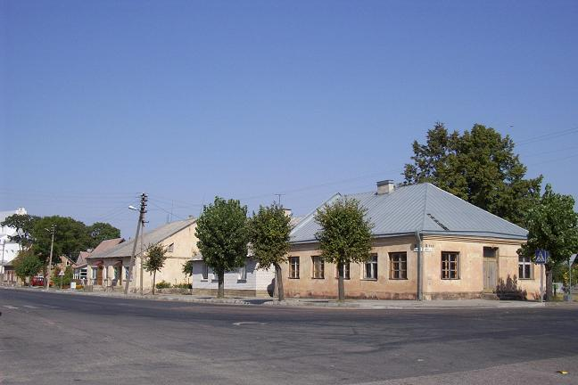
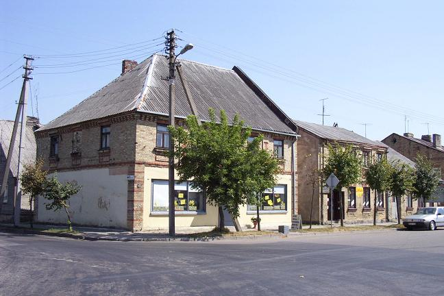
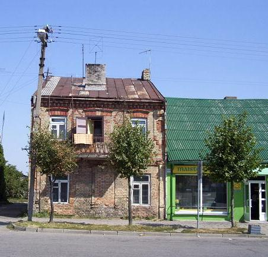
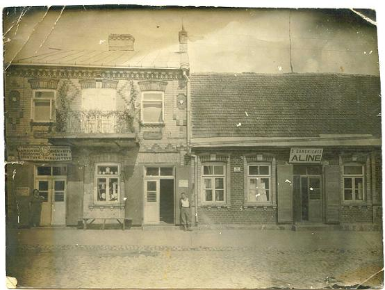
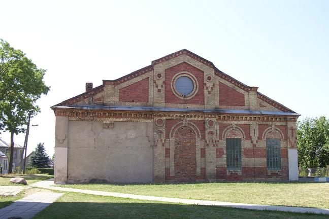
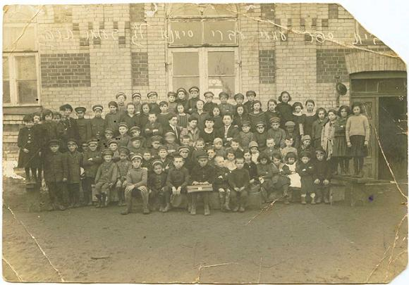

The oldest and sturdiest houses in Simnas, which were inhabited by the Jews until 1941, are located off of the town’s main intersection. Needless to say, these houses are now inhabited by non-Jewish Lithuanians – perhaps even by the descendants of those that collaborated in the killings. The road that goes to Alytus (Route 131) is the one to the right in the first picture; the one to the left is the continuation of the road in the direction of the town of Kalvarija.

In the second picture, the road to the left is the one to Alytus and the one to the right is the main street where the other Jewish-owned houses in this section, and the former synagogue, are located. The road continues past a rail crossing and, a couple of kilometers later, a dirt road on the right leads to the forest where the Jews were massacred.

The two-story house on the left of the next picture has been identified as the former home of Fivel Perecanski, the father of Lea (Perecanski) Elhanani; the one-story green one to the right as the former home of Leibzhik Perecanski, the father of Cusiel Porzecanski (who moved to Latvia at the turn of the 19
th century and, in the mid-1920s, to Uruguay) and of Sheine Perecanski Fonkatz (who migrated to Uruguay in the 1920s). Below it is a picture of the two houses dating back to the early 1930s. Fivel had a store in the front of his house, the entrance to which was through the door on the left; the door on the right led to the upstairs.


The next picture shows a simple but beautiful (though now scarred and altered) building which served as the town’s synagogue and Hebrew school. It is now reportedly used as a gym, although it was closed when we visited and thus we could not check out its interior to see what traces, if any, are left. There is a simple basketball court in the back.


The final picture, dating from 1923, shows the town’s Hebrew School with its nearly 80 children and four teachers in front of the synagogue building, where the school operated. In the front row, the fourth child counting from the right is Lea Elhanani. One can presume that most of these children perished in the massacre of 1941.
Back to the Simnas Section
Pictures of Lithuania
Back to the Homepage